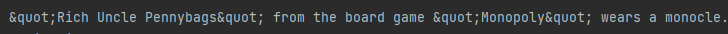

HTML Entities
Sometime, when gathering data across API's, we could encounter this kind of string,

This strange ", and other symbols are called HTML entities and it is a way to prevent confusion in an HTML code. We could fix this by importing a module called html.

Then enclose the string with the html method called unescape